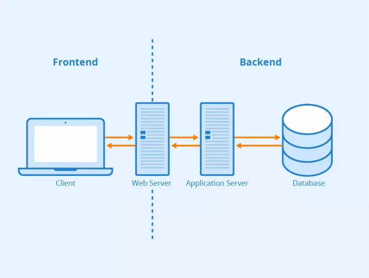
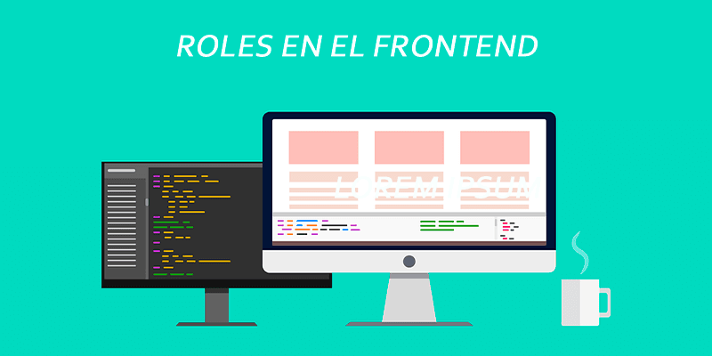
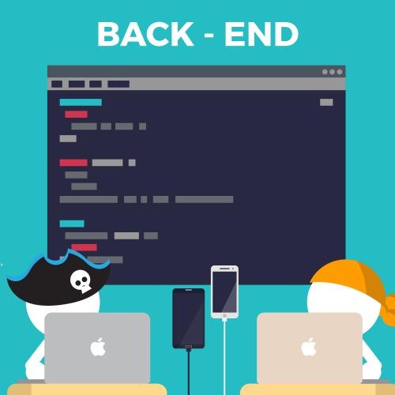
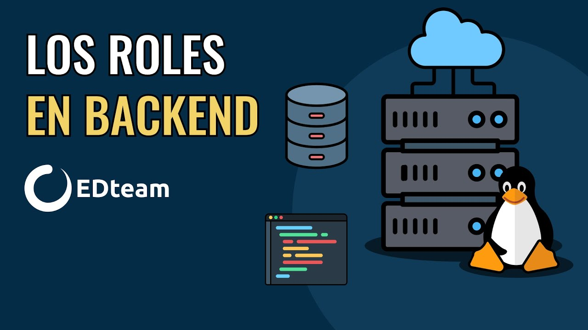

Melisa Marisol Charles Charles
Melisa Marisol Charles Charles
BACKEND-FRONTEND
En sí, Frontend no es más que una interfaz de usuario con el que el individuo interactúa, es decir, una persona que tiene comunicación con su ordenador, el cual este cliente tiene el objetivo de pedir información (las peticiones) mientras que el servidor tiene la función de devolverle la información solicitada, siempre y cuando el cliente tenga permiso.
FRONTEND
¿Qué es Front-End?
Como se dijo anteriormente, el Front-End no es más que el cliente interactuando con la interfaz gráfica para que pueda interactuar con la información que solicite utilizando HTML, CSS y JavaScript.
¿Cuáles son los roles dentro del Front-End?
Los roles que estos manejan los developers del Front-End serían los que son los Diseñadores UI/ Diseñadores Web y los Programadores Front-End.

¿Cuál es la función de cada uno de los roles del Front-End?
El desarrollador front-end trabaja la interfaz desde el punto de vista del código para que el usuario pueda interactuar con un sistema.
¿Cuáles son los principales lenguajes y frameworks usados en el Front-End?
Los principales lenguajes y frameworks que usan son:


BACKEND
¿Qué es Back-End?
El objetivo del backend es diseñar todo lo relacionado a la lógica y las soluciones para que todas las acciones solicitadas en una página web sean ejecutadas correctamente. El desarrollador backend debe estudiar los diferentes lenguajes de programación que pueden ser necesarios para desarrollar su trabajo. Debe formarse como desarrollador de aplicaciones web o como desarrollador de aplicaciones multiplataforma. Además necesita conocer las interacciones con diferentes bases de datos.

¿Cuáles son los roles dentro del Back-End y su función?
Los roles que estos manejan son los Backend Developer, las cuales se encargan de hacer toda la lógica del lado del servidor. Luego tenemos al DBA, el cual se encarga de diseñar las bases de datos. Arquitecto Cloud, este se encarga de analizar el proyecto y el QA, el que se encarga de testear durante el desarrollo del proyecto.

¿Cuáles son los principales lenguajes y frameworks del backend?
Los principales lenguajes y frameworks que usan son:
PHP
LUA+ OpenResty
Python
Asp.NET
Java +
OpenGSE
Ruby + Rubyon Rails
javascript + NodeJS + ExpressJS